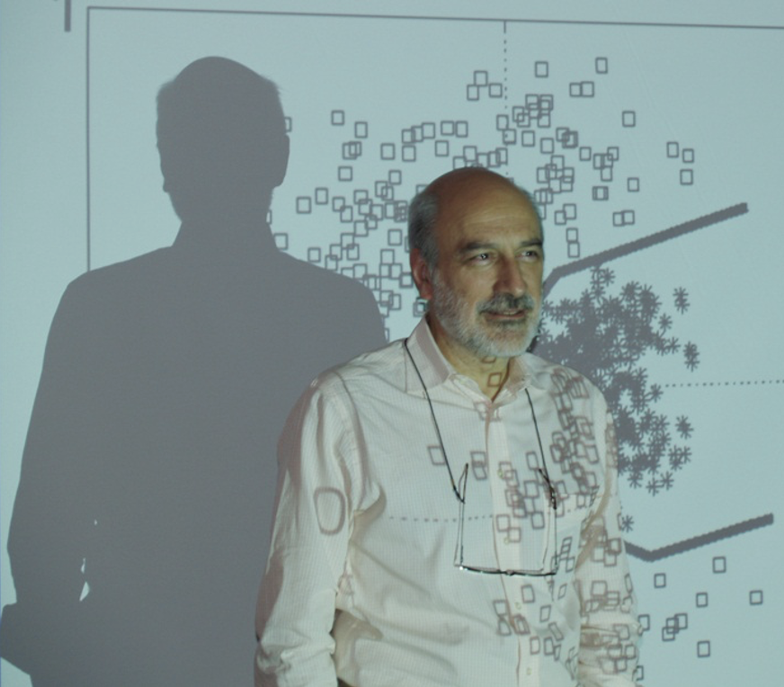

@@include('header.htm')

@@include('blocks/navigation.htm')

@@include('blocks/page-title.htm',{
	"title"		: "Keynote: Principe",
	"page"		: "Keynotes"
})

<section class="section single-speaker">
	<div class="container">
		<div class="block">
			<div class="row">
				<div class="col-lg-5 col-md-6 align-self-md-center">
					<div class="image-block">
						
					</div>
				</div>
				<div class="col-lg-7 col-md-6 align-self-center">
					<div class="content-block">
						<div class="name">
							<h3>Quantifying Model Uncertainty for Semantic Segmentation using RKHS Operators</h3>
						</div>
						<div class="profession">
							<p>Prof. Jose C. Principe</p>
						</div>
						<div class="details">
							<p>
								This talk presents our current goal of developing operators inspired by quantum theory to quantify uncertainty in the outputs of machine learning models, specifically semantic segmentation. The basic observation is that data projected to a Reproducing Kernel Hilbert Space (RKHS) with kernels built from the expected value operator are statistical embeddings of the input data. At the same time, the RKHS functionals obey the properties of a potential field. Therefore, one can directly apply the Schrodinger equation to the projected data and interpret its Hermite expansion in terms of modal decompositions of the PDF over the space of samples that express multi scale uncertainty. This methodology is quite general and can be used in many different applications as demonstrated in the talk.

							</p>
						</div>
						
					</div>
				</div>
			</div>
		</div>
	</div>
</section>

@@include('blocks/footer.htm')

@@include('footer.htm')